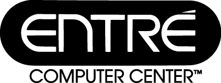

|

Entre' Computer Center has been located in Mt. Pleasant for over nine years. Our Service Department is A+ Authorized. We are authorized to service AST, Apple, Compaq, HP, IBM and twelve other manufacturers. Entre' is the area's only Novell Gold Reseller, with two Certified Network Engineers (CNE) on staff. We are also certified on the Windows NT platform. Entre' is also an Internet Service Provider. This gives us in-depth experience on wide area networks (WAN). We invite you to stop in at 2308 S. Mission, Mt. Pleasant, MI 48858. You can also call us at (517) 773-3146 or (800) 800-3146. |